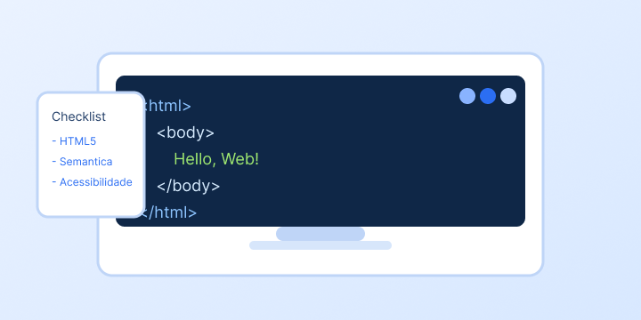

Bem-vindo ao Blog do Fulano
Este projeto foi criado para a atividade de Desenvolvimento Web, com estrutura semântica, imagem com atributos de acessibilidade e lista ordenada em números romanos.

Metas de estudo
- Consolidar a estrutura básica do HTML5.
- Aplicar tags semânticas para melhorar acessibilidade e SEO.
- Praticar organização de projeto com pastas e páginas.